Quiero que funcione, que sea elegante y que me quite problemas.
Control sencillo desde movil o panel, ahorro energetico, seguridad tecnica, escenas automaticas y avisos claros. Sin tener que entender protocolos, cuadros o programacion.
Confort premium, control tecnico y operacion automatizada
Voltia traduce tecnologia compleja en algo facil de usar: una casa que se anticipa, una industria que avisa antes de fallar, una finca que informa desde kilometros de distancia y una instalacion documentada que un proyectista puede justificar, ampliar y mantener.
Control sencillo desde movil o panel, ahorro energetico, seguridad tecnica, escenas automaticas y avisos claros. Sin tener que entender protocolos, cuadros o programacion.
Esquemas, medicion por circuitos, protocolos, integracion API/MQTT, LoRaWAN, historicos, alarmas, mantenibilidad y una estrategia de crecimiento por fases.
Para el cliente: seguridad y continuidad. Para el tecnico: cuadros, protecciones, circuitos criticos y puntos de medida.
Para el cliente: escenas y comodidad. Para el tecnico: reglas, PLC, actuadores, HMI y funcionamiento local.
Para el cliente: todo conectado. Para el tecnico: Ethernet, WiFi industrial, 4G/5G, LoRa, LoRaWAN, MQTT y pasarelas IoT.
Para el cliente: decisiones faciles. Para el tecnico: dashboards, historicos, analitica, alarmas, gemelo digital e IA aplicada.
El usuario ve confort, ahorro y tranquilidad. El proyectista ve una arquitectura por capas: base electrica, automatizacion, comunicaciones, datos y optimizacion inteligente.
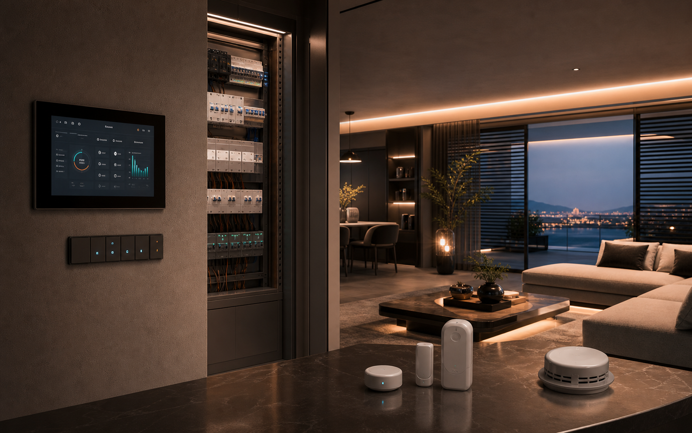
Confort, seguridad, energia y escenas de uso diario.
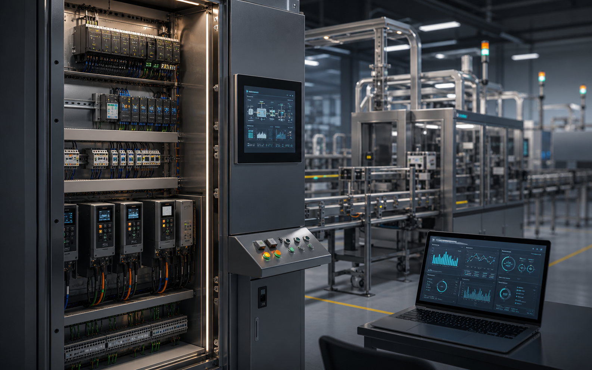
PLC, SCADA, maniobra, sensores y mantenimiento.
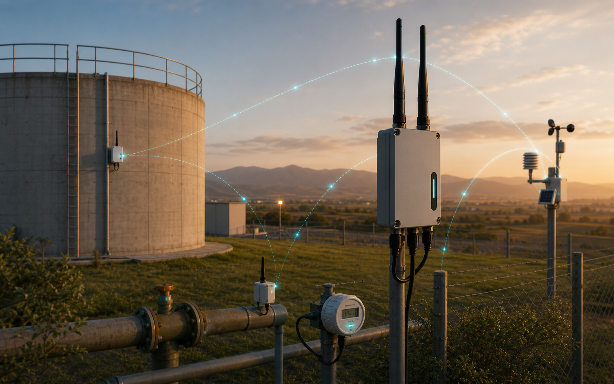
Telemetria de largo alcance para agua, energia y campo.
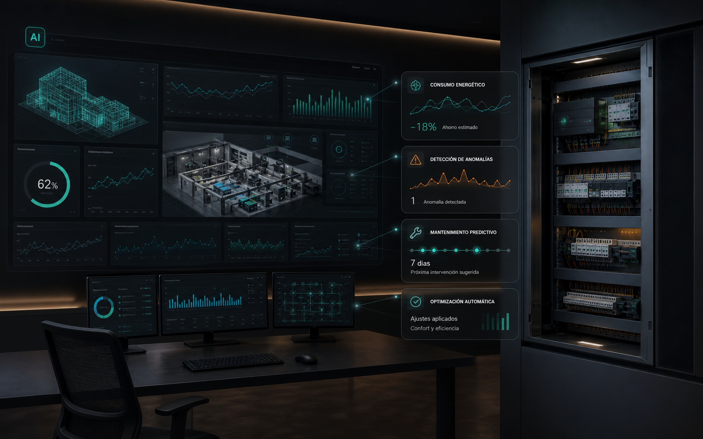
Analitica, alarmas inteligentes y optimizacion continua.
Trabajamos con sensores, gateways, cuadros, comunicaciones y plataformas para que una finca, una nave, una sala tecnica o una linea de produccion pueda medirse y gestionarse sin depender de visitas constantes ni datos aislados.
Telemetria para riego, pozos, depositos, bombeos, camaras, invernaderos, silos, estaciones meteorologicas, consumos electricos y maquinaria aislada.
IoT industrial para saber que esta pasando en cuadros, lineas, motores, compresores, camaras frigorificas, hornos, almacenes, accesos y salas tecnicas.
Temperatura, humedad, energia, caudal, presion, nivel, vibracion, presencia, apertura, CO2, calidad de aire, reles, valvulas y contactores.
LoRaWAN, LoRa punto a punto, Ethernet, WiFi industrial, 4G/5G, Modbus, MQTT y pasarelas entre sistemas existentes.
Paneles web, historicos, reglas, mapas, roles de usuario, alarmas por email/movil, exportaciones e integracion con ERP o mantenimiento.
Reglas por umbral, prediccion, deteccion de anomalias, optimizacion de consumos, priorizacion de incidencias y propuestas de actuacion.
Cada producto se explica en dos niveles: valor facil de entender y base tecnica para proyectar.
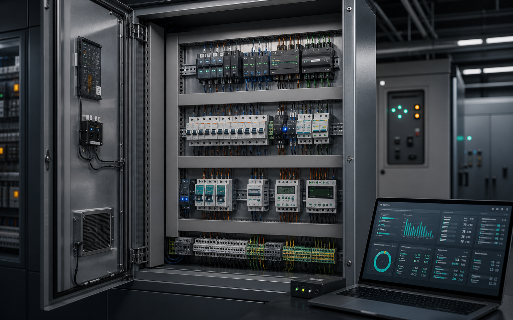
Cliente: seguridad, orden y una instalacion preparada para el futuro. Tecnico: cuadros, protecciones, lineas, medicion, legalizacion y reforma.
Estudiar base electrica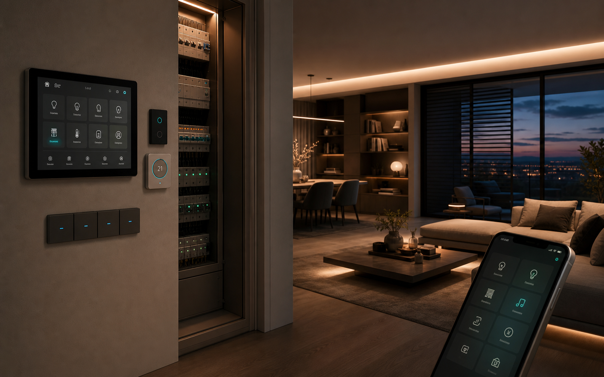
Cliente: la casa responde sola. Tecnico: iluminacion, persianas, climatizacion, accesos, alarmas tecnicas, escenas y control movil.
Disenar vivienda conectada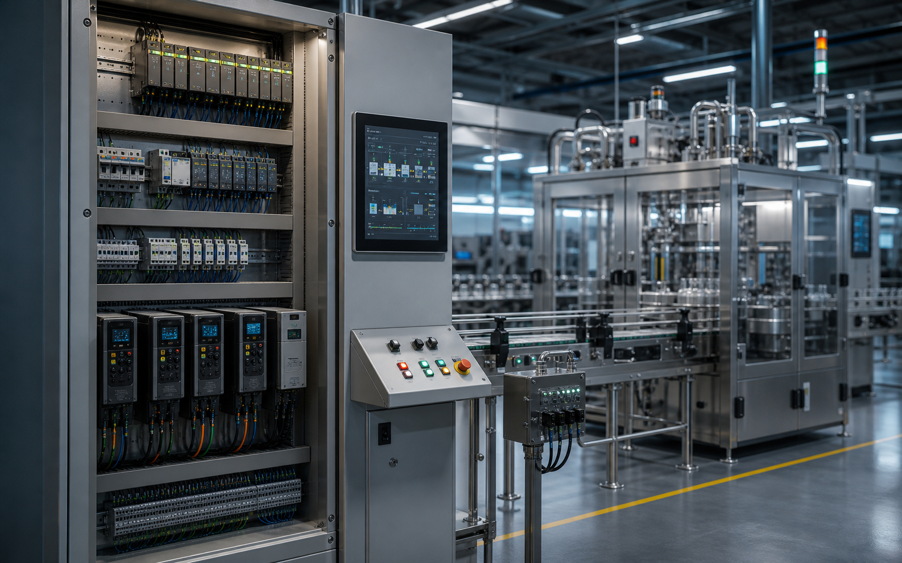
Cliente: menos paradas y mas control. Tecnico: PLC, HMI, variadores, cuadros de maniobra, SCADA, enclavamientos y telecontrol.
Revisar proceso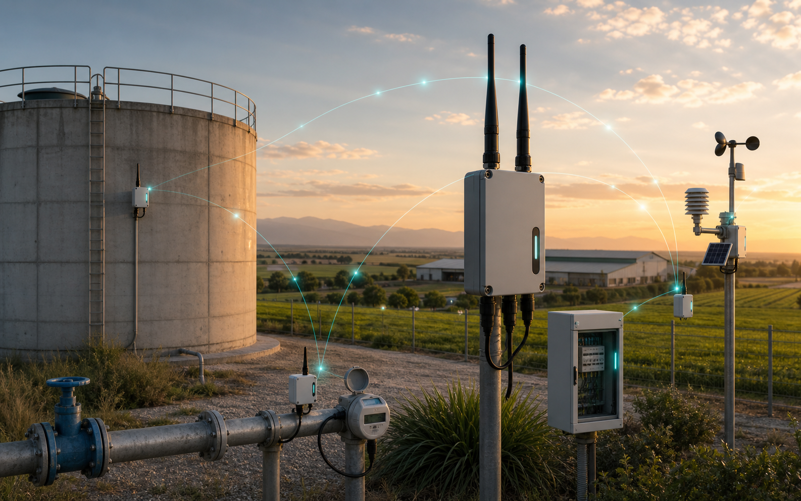
Cliente: saber que pasa aunque este lejos. Tecnico: gateways, nodos, antenas, cobertura, sensores de largo alcance y telemetria.
Calcular cobertura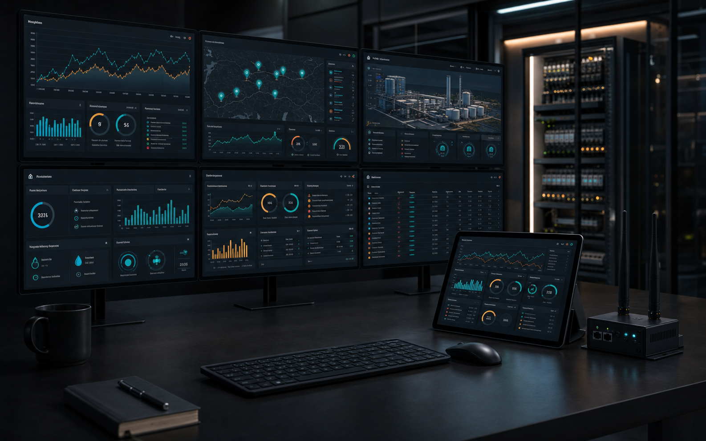
Cliente: verlo todo en un panel claro. Tecnico: MQTT, APIs, dashboards, historicos, alarmas, informes y visualizacion web o movil.
Crear panel de control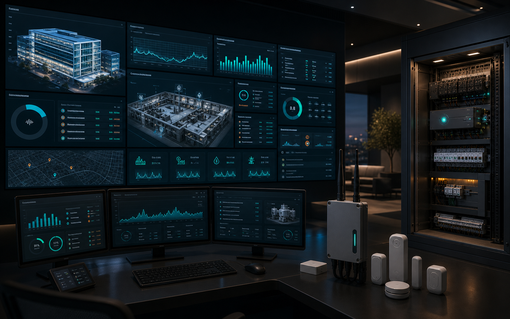
Cliente: anticiparse antes de pagar el problema. Tecnico: anomalias, prediccion de consumos, reglas adaptativas y asistentes operativos.
Automatizar decisionesLa misma metodologia sirve para una vivienda premium, una comunidad, una nave industrial, una finca agricola, una agroindustria o una infraestructura critica. Cambian sensores, protocolos, niveles de redundancia y tipo de decision automatizada.
Solicitar criterio tecnico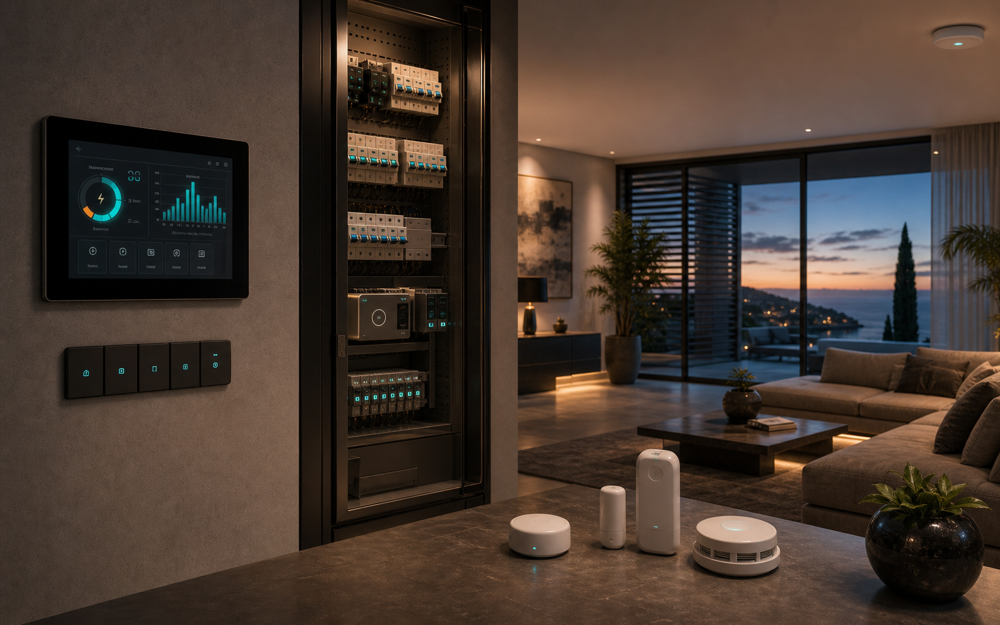
01Confort, seguridad, energia, escenas y control remoto sin perder sencillez.
Salas tecnicas, garajes, consumos, bombas, accesos y mantenimiento centralizado.
Control de procesos, paradas, avisos, maquinaria, trazabilidad y productividad.
Sensores remotos, telemetria LoRa, depositos, riego, pozos, bombeos, clima y consumos distribuidos.
Revisamos instalacion, cargas, procesos, cobertura, riesgos y objetivos de automatizacion.
Definimos componentes, protocolos, cuadros, sensores, plataforma y plan de crecimiento.
Instalamos, programamos, documentamos, probamos alarmas y entregamos control operativo.
Medimos, ajustamos reglas, mantenemos, analizamos historicos y proponemos mejoras.
Objetivos, alcance, arquitectura, comunicaciones, criterios de seguridad, fases y limites de responsabilidad.
Cuadros, protecciones, ubicacion de sensores, gateways, antenas, cableado, alimentacion y puntos criticos.
Indicadores, mapas, alarmas, historicos, roles de usuario, informes y vistas por propietario, tecnico o mantenimiento.
Revision de datos, ajustes de reglas, pruebas de alarmas, actualizaciones, incidencias y recomendaciones periodicas.
Describe el entorno, los activos que quieres controlar y el objetivo: ahorro, confort, seguridad, productividad, mantenimiento, agroindustria, energia, agua o monitorizacion remota.